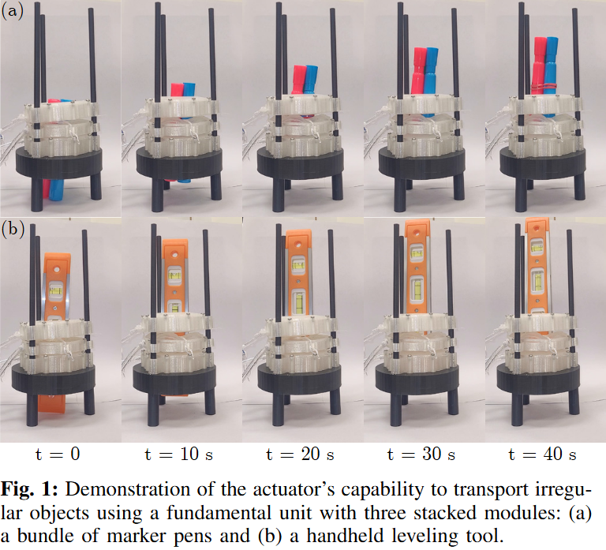

RAL 2025
Bio-Inspired Pneumatic Modular Actuator for Peristaltic Transport
Authors: Brian Ye, Zhuonan Hao, Priya Shah, Mohammad K. Jawed
A modular donut-shaped soft actuator system that uses sequential radial and axial inflation to transport objects via peristaltic waves.
Project Overview & Demo
Core functionality and coordination of modular units.
Visual Documentation


Design & Fabrication
The module uses Ecoflex rings with internal chambers and a TPU strain-limiting casing. Below is the full guide on how these modules are manufactured.
Manufacturing Guide Video
Quick Specs
- Material: Ecoflex 00-45
- Casing: TPU (3D Printed)
- Sensors: MPRLS Pressure
- Logic: Arduino Mega